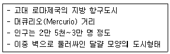
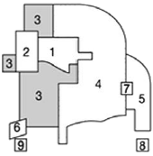
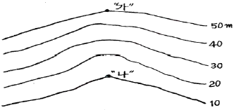
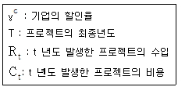
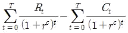
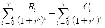
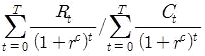
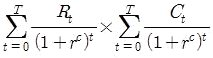
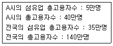
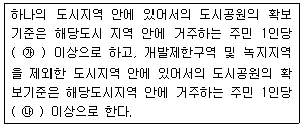

도시계획기사 (2014-09-20 기출문제)
1과목: 도시계획론
1. 다음 중 미래 도시의 새로운 계획 패러다임의 방향으로 가장 거리가 먼 것은?
- 미래 사회에 맞는 새로운 U-도시계획
- 지속가능한 도시개발로의 전환
- 시민참여의 확대와 계획 및 개발체의 다양화
- 지역별 특화를 위한 도ㆍ농 분리적 계획체계로의 전환
(정답률: 91%)

2. 교통 수요추정에서 전통적으로 가장 많이 사용되는 4단계 수요추정방법을 순서대로 바르게 나열한 것은?
- 통행분포-통행발생-통행배분-교통수단선택
- 통행분포-교통수단선택-통행발생-통행배분
- 통행발생-통행분포-교통수단선택-통행배분
- 통행발생-통행배분-교통수단선택-통행분포
(정답률: 86%)
3. 도시화 현상에 대한 정의로서 바람직하지 않은 것은?
- 도시화는 도시의 행정구역이 넓어지는 현상이다.
- 도시화는 농촌인구가 도시지역으로 이동하는 현상이다.
- 도시화는 농촌적 생활양식이 도시적 생활양식으로 변화하는 현상이다.
- 도시화는 인간의 삶터가 공간적 사회ㆍ경제적 측면에서 도시적으로 변화해 가는 현상이다.
(정답률: 74%)
4. 시가지의 토지이용에 있어서 지나친 기능분리나 사적 공간의 확보를 지양하고 적절한 기능의 혼재와 이동거리 단축에 의한 초지자원의 절약과 자동차에 의한 환경의 파괴를 막아보자는 노력에서 등장한 개념은 무엇인가?
- 도시재생(Urban Regeneration)
- 뉴어바니즘(New Urbanism)
- 친환경 생태도시(Eco City)
- 스마트성장관리(Smart Urban Growth Management)
(정답률: 69%)
5. 과거 10년간 등비급수적으로 인구가 증가하여 현재인구가 150만인이고, 10년 전 인구는 100만인 도시가 있다. 이 도시의 연평균 인구증가율은 얼마인가?
- 1.1%
- 2.1%
- 4.1%
- 5.1%
(정답률: 56%)
6. 다음 중 인구성장의 상한선을 두고 있지 않은 도시인구 예측모형은?
- 지수성장모형
- 수정된 지수성장모형
- 곰페르츠모형
- 호지스틱모형
(정답률: 76%)
7. 토지이용의 입지 배분 시 주거지역의 입지선정 기준으로 적합하지 않은 것은?
- 지형조건
- 도시의 경제권
- 주변환경
- 접근성
(정답률: 86%)
8. 다음 중 도시공원에 관한 설명으로 옳은 것은?
- 주제공원의 종류로 역사공원, 문화공원, 수변공원, 묘지공원, 체육공원, 근린공원이 있다.
- 근린공원은 어린이의 보건 및 정서생활의 향상에 기여하기 위하여 설치하는 공원이다.
- 근린공원은 규모에 따라 근린생활권, 도보권, 도시지역권, 광역권으로 구분할 수 있다.
- 묘지공원은 하천ㆍ호수 등의 수변과 접하고 있어 친수공간을 조성할 수 있는 곳에 설치한다.
(정답률: 81%)
9. 다음의 설명에 해당하는 도시는?

- 카스트라(Castra)
- 팀가드(Timgard)
- 아오스타(Aosta)
- 폼페이(Pompeii)
(정답률: 91%)
10. 유비쿼터스도시를 3대 구성요소로 가장 거리가 먼 것은?
- 유비쿼터스도시산업
- 유비쿼터스도시서비스
- 유비쿼터스도시기반시설
- 유비쿼터스도시기술
(정답률: 49%)
11. 다음 중 어느 특정지역이 용도상으로 필요하다고 규정만 해두고 도면상의 배치결정은 유보하는 지역제 기법은?
- 부동지역제(float zoning)
- 특례조치(special exception)
- 혼합지역제(inclusive zoning)
- 성능지역규제(performance zoning)
(정답률: 80%)
12. 다음 중 중세 유럽의 도시가 갖는 물리적 특성에 대한 설명으로 옳지 않은 것은?
- 성벽과 대규모 사원이 도시 공간의 주된 구성요소이다.
- 도심을 강조하기 위해 직선을 중심으로 계획하고, 엄격한 용도규제를 통하여 도시내부 기능을 분리하였다.
- 필요한 기회가 주어질 때마다 이를 활용하는 유기적계획(organic planning)의 형태로 진행되었다.
- 방어를 위해 사용된 해자, 운하, 강이 개별도시를 고립시켰다.
(정답률: 78%)
13. 다음 중 GIS에 대한 설명으로 옳지 않은 것은?
- GIS는 지리ㆍ공간 정보를 받아들여 체계적으로 저장ㆍ검색ㆍ변형ㆍ분석하고, 사용자에게 유용한 새로운 형태의 정보로 표현하는 등의 작업을 수행하기 위한 기술이나 작동과정 혹은 도구이다.
- GIS는 기술적인 측면 뿐 아니라 GIS를 사용하는 지원인력 및 시설의 측면을 모두 망라하는 것으로 파악한다.
- SIS를 이용한 공간분석을 통해 입력된 정보를 지리적으로 검색하고 표현할 수 있다.
- 벡터 자료는 정방형 셀을 자료저장과 표현의 기본단위로 하기 때문에 격자형태의 결과물로 생성하게 된다.
(정답률: 87%)
14. 다음 중 도로의 기능별 구분에 따른 설명으로 옳지 않은 것은?
- 주간선도로 : 시ㆍ군 상호간을 연결하여 대향 통과교통을 처리하는 도로로서 시ㆍ군의 골격을 형성하는 도로
- 보조간선도로 : 시ㆍ군 교통의 집산기능을 하는 도로로서 근린주거구역의 외곽을 형성하는 도로
- 국지도로 : 근린주거구역 내 교통의 집산기능을 하는 도로로서 근린주거구역 내부를 구획하는 도로
- 특수도로 : 보행자전용도로ㆍ자전거전용도로 등 자동차외의 교통에 전용되는 도로
(정답률: 80%)
15. 우리나라 용도지역지구제의 특징에 대한 설명으로 옳지 않은 것은?
- 용도지역지구제는 토지이용의 특화 또는 순화를 도모하기 위하여 도시의 토지이용도를 구분하는 제도이다.
- 용도지역지구제는 이용목적에 부합하지 않는 건축 등의 행위는 규제하고 부합하는 행위는 유도하는 제도적 장치이다.
- 용도지역지구제는 공공의 건강과 복리를 증진시키기 위한 것으로 이의 실현을 위해 법적 규제를 통하여 개인의 토지이용을 제한한다.
- 용도지역지구제에 있어 용도지역은 상호 중복지정이 가능하고, 용도지구는 중복지정이 허용되지 않는다.
(정답률: 79%)
16. 계획이론 중에서 약자의 이익을 보호하고, 지역주민의 이익을 대변하는 접근방법인 옹호이론을 주장한 학자는?
- 다비도프(Davidoff)
- 린드블룸(Lindblom)
- 에티지오니(Etzioni)
- 프리드만(Friedman)
(정답률: 84%)
17. 지역의 산업성장을 국가전체의 성장요인, 산업구조적 요인, 지역의 경쟁력 요인으로 구분하여 지역경제를 분석하고 예측하는 기법은?
- 경제기반모형
- 투입산출분석
- 변이할당분석
- 비용편익분석
(정답률: 59%)
18. 개발행위 허가대상 및 규모로 옳지 않은 것은?
- 주거ㆍ상업ㆍ자연녹지ㆍ생산녹지지역 : 10,000m2
- 공업지역 : 50,0002 미만
- 보전녹지 및 자연환경보전 : 5,0002 미만
- 관리지역 및 농림지역 : 30,0002 미만
(정답률: 78%)
19. 토지이용계획의 수립과정을 상향적 접근과 하향적 접근으로 구분할 때, 이에 대한 설명이 옳지 않은 것은?
- 상위계획의 지침을 받아 도시의 기본계획을 설정하는 것은 상향적 접근이다.
- 도시 내 지구수준의 문제점 해결을 우선하는 것은 상향적 접근이다.
- 기성시가지의 유형별 대책을 수립하는 것은 상향적 접근이다.
- 도시 차원에서 도시 전체의 기본 구조를 중시하는 것은 하향적 접근이다.
(정답률: 85%)
20. 아래 그림이 나타내는 이론과 “3(빗금친 부분)”에 해당하는 토지이용이 모두 옳게 연결된 것은?

- 다핵심이론-고소득층 주거지구
- 선형이론-도매경공업지구
- 다핵심이론-저소득층 주거지구
- 선형이론-점이지대
(정답률: 87%)
2과목: 도시설계 및 단지계획
21. 래드번(Radburn) 계획의 기본 원리가 아닌 것은?
- 슈퍼블럭(Super Block)을 구성하였다.
- 쿨데삭형의 세가로망을 구성하였다.
- 주거단지 내에 통과 교통을 허용하였다.
- 도로를 기능별로 구분하여 설치하였다.
(정답률: 87%)
22. 다음 중 특별계획구역에 대한 설명으로 옳지 않은 것은?
- 지구단위계획구역 중에서 현상설계 등에 의하여 창의적 개발안을 받아들일 필요가 있거나 계획의 수립 및 실현에 상당한 시간이 걸릴 것으로 예상되어 충분한 시간을 가질 필요가 있을 때에 별도의 개발안을 만들어 지구단위계획으로 수용 결정하는 구역을 말한다.
- 복잡한 지형의 재개발구역을 종합적으로 개발하는 경우와 같이 지형조건상 지반의 높낮이 차이가 심하여 건축적으로 상세한 입체계획을 수립하여야 하는 경우 특별계획구역으로 지정한다.
- 특별계획구역에 대한 계획내용은 지구단위계획에 포함하여 결정한다.
- 구역 내 권리관계가 복잡하여 민간개발보다 공공개발과 연계가 주목적이지만 주민의 합의가 있는 경우는 민간사업과 연계가 가능하다.
(정답률: 67%)
23. 페리(C.A.Perry)가 주장한 근린주구론의 원칙이 아닌 것은?
- 주거단위는 하나의 초등학교 운영에 필요한 인구에 대응하는 규모를 가져야 하고, 그 규모는 인구밀도에 의해 결정된다.
- 주거단위는 주거지 안으로 지나는 통과교통이 내부를 관통하지 않고 우회되어야 하며, 네 면 모두 충분한 폭원의 간선도로(arterial steet or high way)로 위요되어야 한다.
- 하나의 근린주구는 상위도시를 기준으로 구축된 가로체계에 의존하고, 원활한 순환체계 속에서 통과교통을 체계적으로 수용할 수 있는 입체적인 가로망으로 계획한다.
- 개개 근린주구의 요구에 부합하도록 계획된 소공원과 레크레이션 체계를 갖춘다.
(정답률: 80%)
24. 단지계획에서 보차공존도로의 설치 목적과 거리가 먼 것은?
- 노상주차 억제를 통한 안전성 확보
- 삭제 공간 확보를 통한 쾌적성 증대
- 통과교통 억제를 통한 안전성 확보
- 국지도로와의 교차지점 감소를 통한 효율성 확보
(정답률: 62%)
25. 도시설계 또는 지구단위계획과 비교하여 단지계획이 갖는 정의 및 특성으로 틀린 것은?
- 대지조성계획이다.
- 지침제시적인 규제계획이다.
- 시설물의 배치까지도 포함한다.
- 밀도, 용적, 형태, 기능과 패턴 등을 마련한다.
(정답률: 67%)
26. 획지계획에 대한 설명으로 틀린 것은?
- 획지(lot)는 개발이 이루어지는 최소 단위다.
- 앞으로 진행될 단위 개발의 토지기반을 마련해주는 행위다.
- 획지의 형태와 규모는 건축물의 용도와 밀도, 가로구성, 경관조성 등이 실제적으로 실현되는데 영향을 준다.
- 획지계획은 토지이용의 효율성과 주거의 쾌적성 중 하나의 목적만을 선택하여 추구할 수 있도록 계획하여야 한다.
(정답률: 86%)
27. 다음 중 공동주택건립을 위한 지구단위계획에서의 친환경 계획요소로 가장 거리가 먼 것은?
- 비오톱 조성
- 투수성 바닥처리
- 자원 재활용
- 조망권 확보
(정답률: 80%)
28. 사방이 가로에 의하여 둘러싸인 일단의 토지를 무엇이라 하는가?
- 획지(lot)
- 가구(block)
- 단지(site)
- 지구(district)
(정답률: 76%)
29. 경관분석의 방법에 해당하지 않는 것은?
- 그린 매트릭스(green matrix)에 의한 방법
- 시각회랑(visual corridor)에 의한 방법
- 게슈탈트(gestalt)에 의한 방법
- 기호화 방법
(정답률: 63%)
30. 주거환경의 제요소 중 자연ㆍ환경적 측면에 대한 설명으로 틀린 것은?
- 일조는 단독적 요소라기보다는 조합, 프라이버시와 함께 고려되기 때문에 건물의 높이만을 감안하여 일률적으로 규정할 수 없다.
- 인공성 표면재료(아스팔트, 콘크리트, 돌 등)는 토양이나 식생으로 피복된 지표면보다 열 전달의 속도와 강도가 약하다.
- 지형이나 지세는 도로의 구배, 토지이용, 건물의 배치, 시각적인 효과, 유수의 형태 등에 있어 주거환경의 결정에 있어서 중요한 요소이다.
- 식생, 특히 교목은 단지 내 오픈스페이스의 일사량 조절에 큰 영향을 미치는 요소이다.
(정답률: 83%)
31. 도시지역 내 지구단위계획구역을 지정할 수 있는 용도지구가 아닌 것은?
- 경관지구
- 리모델링지구
- 보존지구
- 개발진흥지구
(정답률: 77%)
32. 도시 안에서 상업 등 특정기능을 강화하거나 도시팽창에 따라 기존 도시의 기능을 흡수ㆍ보완하는 새로운 시가지를 개발하고자 하는 경우 지구단위계획구역의 지정 목적은?
- 기존 시가지의 관리
- 복합용도개발
- 기존 시가지의 정비
- 신시가지의 개발
(정답률: 69%)
33. 도시ㆍ군계획시설로서 초등학교는 근린주거구역단위로 설치하며, 근린주거구역의 중심시설이 되도록 한다. 이때 새로이 개발되는 지역의 경우 1개의 근린주거구역의 범위는 몇 세대를 기준으로 결정하게 되는가? (단, 이미 개발된 지역과 인접한 지역의 개발여건을 고려하여 필요한 경우 세대수를 조정하는 것은 고려하지 않음.)
- 500세대 내지 1000세대
- 1000세대 내지 2000세대
- 2000세대 내지 3000세대
- 5000세대 내지 10000세대
(정답률: 75%)
34. 케빈 린치(Kevin Lyncy)가 주장한 도시 이미지의 구성요소가 아닌 것은?
- 패스(path)
- 노드(node)
- 그레인(grain)
- 디스트릭스(district)
(정답률: 88%)
35. 쿨데삭(cul-de-sac)도로에 대한 설명으로 옳은 것은?
- 보도와 차도의 분리가 힘들다.
- 부정형한 지형에 적용이 곤란하다.
- 운전자가 전체 도로망을 인지하기 쉽다.
- 통과 차량의 통행을 억제하는 효과가 있다.
(정답률: 87%)
36. 가, 나 지점 사이의 평균 경사도는 얼마인가? (단, 두 지점사이의 수평거리는 500m 이다.)

- 6%
- 8%
- 10%
- 12%
(정답률: 80%)
37. 1가구의 단층형으로서 주거공간이 마당을 부분 또는 전부 에워싸고 있는 주택형태를 무엇이라고 하는가?
- Terrace house
- Town house
- Patio house
- Row house
(정답률: 66%)
38. 주거단지내의 공원ㆍ녹지의 기능이 아닌 것은?
- 대기오염 및 수질오염을 정화
- 미기후 조절 가능
- 차경(借景) 기회 억제
- 화재ㆍ홍수 등의 재난 예방과 완화
(정답률: 79%)
39. 슈퍼블럭을 구성함으로써 얻는 효과로 가장 거리가 먼 것은?
- 건물을 집약화함으로써 고층화 및 효율화에 기여한다.
- 충분한 공동의 오픈스페이스 확보가 가능하다.
- 블록 주변부 가로의 활성화에 기여한다.
- 전력, 난방, 하수, 쓰레기 등 도시시설의 공동화가 용이하다.
(정답률: 64%)
40. 도시설계와 관련된 공간 척도의 설명으로 틀린 것은?
- 르네상스시대의 건축가인 알베르티는 광장의 경우, 장변과 단변의 비가 2:1, 주변 건물의 높이는 광장 단변폭의 1/3 또는 2/7 이하가 적당하다고 하였다.
- 19세기 독일의 건축가 메르텐츠는 걸문과 시점간의 거리(D)와 건물 높이(H)와의 비율은 D/H=2, 양각 35도에서 건축물을 전체적으로 파악할 수 있다고 하였다.
- 헷지맨과 피이츠는 건축높이의 약 2배만금의 거리에서 보지않으면, 건축을 전체로서 볼 수 없다고 하였다.
- 요시노부 아시하라는 도로폭보다 작은 치수의 점포폭이 반복될 때 가로는 활기에 넘친다고 하였다.
(정답률: 78%)
3과목: 도시개발론
41. 사업성 분석 체계 중 연차별 투자비용 추정 단계에서 이루어지는 작업은 무엇인가?
- 할인율 설정
- 용지별 분양가격 추정
- 연차별 분양수입 추정
- 직접비 및 간접비 추정
(정답률: 64%)
42. 다음 중 사업성 평가에 사용되는 지표에 대한 일반적인 설명이 옳지 않은 것은?
- 내부수익률이 자본비용보다 클 때 프로젝트는 사업성이 있는 것으로 평가된다.
- 수익성 지수가 1보다 클 때 해당 프로젝트는 사업성이 있는 것으로 평가된다.
- 순현재가치가 1보다 작을 때 그 프로젝트의 사업성은 없는 것으로 평가된다.
- 수익성 지수는 프로젝트로부터 발생하는 할인된 전체 수입을 할인된 전체비용으로 나눈 값이다.
(정답률: 65%)
43. 리모델링 사업의 근거법은 무엇인가?
- 도시 및 주거환경정비법
- 주택법
- 국토의 계획 및 이용에 관한 법률
- 임대주택법
(정답률: 76%)
44. 다음 중 시행방식에 따른 재개발사업의 분류에 해당하지 않는 것은?
- 한류재개발(regeneration)
- 전면재개발(redevelopment)
- 수복재개발(rehabilitation)
- 보전재개발(conservation)
(정답률: 85%)
45. 마케팅을 활성화하기 위한 경영활동의 계획에서 반드시 수반되어야 하는 마케팅전략(STP)의 세 단계는?
- Stimulating, Tightening, Positioning
- Stimulating, Tightening, Pursuing
- Standardization, Targeting, Pursuing
- Segmentation, Targeting, Positioning
(정답률: 64%)
46. 다음은 도시 및 주거환경정비법에 의한 사업시행을 위해서 거쳐야 하는 절차들이다. 이들 중에서 가장 마지막에 이루어지는 절차는?
- 정비구역의 지정
- 조합의 설립
- 관리처분계획인가
- 사업시행인가
(정답률: 52%)
47. 다음 중 개발권양도제(TDR)에 대한 설명으로 옳지 않은 것은?
- 토지소유자의 개발제한에 대한 보상을 하므로 높은 공정성을 확보할 수 있다.
- 보상가격산정에 있어 시장기구를 활용할 수 없다.
- 자원배분의 왜곡을 어느 정도 방지할 수 있다.
- 보상비용이 과다할 수 있으며, 제도의 시행에 많은 준비와 기획이 요구된다.
(정답률: 79%)
48. 도시개발을 위한 입지분석 단계에서 토지공부 분석을 통하여 알 수 없는 사항은 무엇인가?
- 지적현황
- 지장물
- 부지의 위치
- 소유자
(정답률: 68%)
49. 1920년대에 위성도시안을 제안한 사람이 아닌 자는?
- 테일러(G. R. Taylor)
- 라딩(A. Rading)
- 기버드(F. Gibberd)
- 휘튼(R. Whitten)
(정답률: 56%)
50. 다음 중 금융기관이나 기업이 보유하고 있는 장기성 유가증권, 대출증권, 외상매출금 등의 자산을 담보로 증권을 발행하여 투자자들에게 매각함으로써 자금을 조달하는 금융기법은?
- 지산담보부증권(ABS)
- 공인담보부증권(CBS)
- 유동화전문회사(SPC)
- 리츠(REITs)
(정답률: 82%)
51. 마케팅의 개념에서 D. Schultz는 공급자 관점의 4P의 전략을 수요자 입장의 4C 전략으로 전환하였는데 올바르게 짝지어진 것은?
- 상품(product)→소비자(customer value)
- 상품(product)→비용(cost to the customer)
- 홍보(promotiom)→편리성(convenience)
- 장소(place)→의사소통(communicatiom)
(정답률: 75%)
52. 도시개발사업의 경제적 타당성 분석에 관한 설명으로 가장 거리가 먼 것은?
- 경제적 타당성 분석의 전개과정은 상식적이고 합리적으로 도시개발사업을 평가한다.
- 도시개발사업의 경제적 타당성 분석에서 할인율은 고려하지 않는다.
- 경제적 타당성 분석의 평가지표로 비용-편익비(B/C), 내부수익률(IRR)을 이용할 수 있다.
- 도시개발에서의 경제적 타당성은 개발 사업에 소요되는 비용보다 발생되는 수익이 많을 때에 인정된다.
(정답률: 80%)
53. 1960년대 이후 미국의 계획단위개발(PUD)의 본격적시행을 통하여 몇 가지 문제점이 지적되었다. 다음 중 계획단위개발의 문제점으로 볼 수 없는 것은?
- 평범한 고밀도단지의 형성 우려
- 고용기회를 갖추지 못한 채 대량인구 유입 우려
- 공동 오픈스페이스 등 과도한 유지ㆍ관리비용 발생
- 지방자치단체 개발관리능력의 저하
(정답률: 63%)
54. 도시개발의 패러다임 중 자연자원의 무분별한 훼손을 막고 직주근접을 통해 교외지역에서 발생하는 교통량을 최소화 하여 인프라 및 에너지를 효율적 이용을 도모하려는 것은?
- 뉴어바니즘(New Urbanism)
- 어반 빌리지(Urban Vllage)
- 스마트성장(Smart Growth)
- 컴팩트시티(Compact City)
(정답률: 82%)
55. 도시개발사업의 평가를 위한 지표인 수익성 지수(PI)를 산정하는 식으로 옳은 것은?





(정답률: 83%)
56. 도시개발사업에서 환지방식에 대한 설명 중 옳은 것은?
- 감보란 시행자가 환지방식에 의해 신설 또는 확장된 공공시설용지를 제외한 토지를 권리자에게 배분하는 것을 말한다.
- 환지계획은 입체환지를 원칙으로 한다.
- 환지설계의 방법은 평가식, 면적식, 감보비율식이 있다.
- 환지계획구역에서 평균초지부담률은 최소 50%이상 이어야 한다.
(정답률: 31%)
57. 다음 중 기업고시의 기능별 유형에 해당하지 않는 것은?
- 제조업과 교역위주의 산업교역형 기업도시
- 연구개발 위주의 지식기반형 기업도시
- 관광ㆍ레저ㆍ문화 위주의 관광레저형 기업도시
- 지역의 정체성을 살려주는 특성화형 기업도시
(정답률: 59%)
58. 다음 중 공공기관을 지방으로 이전하는 계기로 지역의 성장거점지역에 조성되는 도시로, 지역의 대학ㆍ연구소ㆍ지방자치단체가 협력하여 새로운 성장동력을 창출하는 기반이 될 것으로 기대되는 것은?
- 행복도시
- 혁신도시
- 기업도시
- 뉴타운
(정답률: 83%)
59. 다수의 대안이 제시되었을 때 다면적 평가기준에 의해 복잡한 문제를 체계적으로 단순 구조화하여 합리적 결정을 내릴 수 있도록 유도하는 분석방법은?
- CVM(Contingency Valuation Method)
- NPV(Net Present Value)
- IRR(Internal Rate Of Return)
- AHP(Anaytical Hierarchical Process)
(정답률: 78%)
60. 다음 중 관리상 부실로 인하여 도시환경이 악화될 우려가 예견되거나 이미 악화된 지역에 대하여 기존 시설을 보존하면서 노후 및 불량화 요인만을 제거하는, 즉 부분적인 철거재개발 형식으로 구역 전체의 기능과 환경을 회복하거나 개선시키는 소극적인 재개발 시행방식은?
- 보완재개발(recover)
- 수복재개발(rehabilitation)
- 보전재개발(conservation)
- 지구단위개발(sectiondevelopment)
(정답률: 68%)
4과목: 국토 및 지역계획
61. 제1차 국토종합개발계획에서의 권역 설정이 옳은 것은?(오류 신고가 접수된 문제입니다. 반드시 정답과 해설을 확인하시기 바랍니다.)
- 국토교통부장관은 국토에 관한 계획 및 정책의 수립과 집행에 활용하기 위하여 국토종합계획의 수립 시에 정기조사를 실시한다.
- 국토교통부장관이 필요하다고 인정하는 경우 특정지역 또는 부문 등을 대상으로 수시조사를 실시할수 있다.
- 국토교통부장관은 중앙행정기관의 장 또는 지방장치단체의 장에게 조사에 필요한 자료의 제출을 요청하거나 조사 사항 중 일부에 대하여 직접 조사하도록 요청할 수 있다.
- 국토교통부장관은 효율적 국토조사를 위해 조사항목 및 조사주체 등 필요한 사항에 대하여 관계중앙행정기관의 장 및 시ㆍ도지사와 사전협의를 거쳐 국토조사계획을 수립할 수 있다.
(정답률: 38%)
62. 다음 중 지역계획이 하나의 학문영역으로서 출발하게 된 세가지 근간 중 하나가 아닌 것은?
- 현실 지향적이며 참여적이고 사회적 측면을 강조하는 경향으로부터 발전한 지역계획학
- 도시계획의 확대된 개념으로서 도시계획과 농촌계획을 연속적 개념으로 접근하는 지역계획학
- 지리학과 경제학의 공간정책적 접근방법의 발전된 형태로서 정립된 지역계획학
- 사회주의 내지 계획경제체제 하에서 국가계획의 하위계획이론으로서 성립된 지역계획학
(정답률: 44%)
63. 다음 중 리(E. S. Lee)가 인구이동을 설명하기 위해 사용한 개념에 해당하지 않는 것은?
- 흡인요인
- 밀어내는 요인
- 확률적 요인
- 중간개입 장애요인
(정답률: 71%)
64. 공공투자분석에 사용되는 내부수익률에 관한 설명 중 옳지 않는 것은?
- 결정된 평가기간 내에 총편익과 투입된 총비용과 일치하는 이자율이다.
- 내부수익률은 상호배타적인 사업의 절대적 규모의 차이를 적절히 고려한다.
- 사업시행의 순현가치가 0이 되도록 하는 할인율로 계산된다.
- 투자사업이 원만히 집행된다는 전제하에서 기대되는 예상수익률이다.
(정답률: 53%)
65. 국토계획 및 정책에 관한 중요사항을 심의하기 위하여 마련된 국무총리 소속기관은?
- 중앙도시계획위원회
- 국토계획위원회
- 국토정책위원회
- 국가균형발전위원회
(정답률: 72%)
66. 다음 중 도시공간의 확장과 분화는 지속적인 침입(invasion)과 계승(succession)의 과정을 통해 이루어진다고 설명하는 도시 공간 구조 이론은?
- 선형이론
- 다핵이론
- 동심원이론
- 다차원이론
(정답률: 68%)
67. 지역간 소득격차를 나타내는 지니계수(Gini coefficient)가 1일 경우를 설명한 것으로 옳은 것은?
- 지역간 소득이 완전히 균등배분되어 있음
- 지역간 소득이 완전히 불균등상태임
- 지역간 소득 격차를 알 수 없음
- 지역간 소득이 상당히 불균형적임
(정답률: 57%)
68. 다음 중 제4차 국토종합계획 수정계획(2006~2020)의 주요내용으로 가장 거리가 먼 것은?
- 동북아 시대의 국토경영과 통일기반 조성
- 분권형 국토계획과 집행 체계의 구축
- 네트워크형 인프라 구축
- 사회간접자본의 확충과 국토이용관리 효율화
(정답률: 42%)
69. 다음의 조건을 가진 A시의 섬유업에 관한 L.Q 지수는?

- 0.5
- 1.2
- 2.0
- 2.4
(정답률: 72%)
70. 산업 및 생활기반시설 등이 다른 지역에 비하여 현저히 낙후된 지역을 종합적으로 개발함으로써 지역주민의 소득증대와 복지향상을 기하고 지역간 격차를 해소하여 국토의 균형있는 발전을 도모함을 목적으로 하였던 것은?
- 오지종합개발계획
- 접경지역개발계획
- 도서종합개발계획
- 개발밀도정비계획
(정답률: 65%)
71. 다음 중 대표적으로 사용되는 공공시설 입지모형과 그에 대한 설명으로 옳지 않은 것은?
- 거리최소화 입지모형-수요가 이산되어 있는 네트워크상에서 모든 시설이용자들의 평균통행시간을 최소화하도록 p개의 시설을 입지시킨다.
- 한정시간 입지모형-정해진 또는 거리 이내에 모든 수요가 충족되도록 하는 최소한의 시설 수와 그 입지를 찾는다.
- 최대수요 입지모형-일정한 시간이나 기준거리내에서 가장 많은 고객에서 서비스가 도달되도록 p개의 시설을 배치한다.
- 최소비용 입지모형-p개의 시설을 입지시키는데 소요되는 비용을 최소화하는 입지를 찾는다.
(정답률: 38%)
72. 지역균형개발 및 지방중소기업 육성에 관한 법률상 지역종합개발지구의 지정 대상에 해당하는 지역은?
- 주요 산업 및 기반시설의 이전ㆍ쇠퇴자 지역의 부존자원고갈 등으로 새로운 지역경제 기반의 구축이 필요한 지역
- 역사ㆍ문화 유산의 보전ㆍ정비 또는 관광자원의 개발 등을 위하여 기반시설의 설치, 주변지역과의 연계개발 또는 정비가 필요한 지역
- 자연재해 및 산업재해 등으로부터 항구적인 복구와 정비가 필요한 지역
- 산업ㆍ유통ㆍ교육ㆍ연구ㆍ문화ㆍ관광ㆍ주거ㆍ업무 단지등의 조성사업과 기반시설 서치사업 등을 상호 연계하여 동시에 또는 순차적으로 시행할 필요가 있는 지역
(정답률: 64%)
73. A도시와 B도시가 있다. 컨버스의 수정소매린력이론을 이용하여 A도시로부터 분기점까지의 거리를 구하면 얼마인가? (단, A 도시의 도시 인구 100,000인, B 도시의 도시 인구 900, 000인, A 도시와 B 도시간의 거리는 200km)
- 30km
- 50km
- 70km
- 75km
(정답률: 62%)
74. 국가혁신체제를 ‘새로운 기술의 창출, 변경, 확산을 유도하는 공적, 사적 제도들의 네트워크’ 라고 정의한 사람은?
- Webber
- Marshall
- Myrdl
- Freeman
(정답률: 48%)
75. 다음 중 지역간 불균형성장이론을 옹호한 학자는?
- 넉스(Nurkse)
- 허쉬만(Hirschman)
- 루이스(Lewis)
- 로젠스타인 로단(Rosenstein-Rodan)
(정답률: 78%)
76. 다음 중 국토 및 지역개발의 관점에서 중앙 정부 주도의 하향식 개발을 지향하는 것은?
- 도농통합개발
- 지역생활권개발
- 성장거점개발
- 농어촌정주권개발
(정답률: 77%)
77. 국토기본법상의 지역계획에 해당하지 않은 것은?(관련 규정 개정전 문제로 여기서는 기존 정답인 3번을 누르면 정답 처리됩니다. 자세한 내용은 해설을 참고하세요.)
- 광역권개발계획
- 특정지역개발계획
- 도종합계획
- 수도권발전계획
(정답률: 73%)
78. 다음 중 국토기본법상 국토관리의 기본이념으로 옳지 않은 것은?
- 국토의 균형있는 발전
- 경쟁력 있는 국토 여건의 조성
- 거점개발에 의한 집적이익의 추구
- 환경친화적 국토관리
(정답률: 88%)
79. 지역개발의 테크노폴리스전략은 첨단산업의 발전가능성이 성공의 주요한 요소이다. 첨단산업의 입지조건에서 일반적으로 가장 불리한 것은?
- 양호한 국내외 항공의 접근성
- 대규모 공업단지 소재 도시
- 양호한 주거환경
- 대학 등의 연구기관 존재
(정답률: 64%)
80. 다음은 크리스탈러의 중심지이론에 대한 설명으로 옳지 않은 것은?
- 중심지로부터 재화나 용역을 공급받는 주변지역을 배후지역, 시장권 또는 보완지역이라 한다.
- 중심지이론은 3차 산업이 공간상에서 어떻게 입지하고 어떤 원리에 의하여 분포 패턴이 결정되는지를 설명한다.
- 중심지 간 관계성을 나타내는 K값은 시장의 원리, 교통의 원리, 행정의 원리 중 시장의 원리에서 가장 크다.
- 중심지이론에서 지리적 공간은 자원과 인구가 균등하게 분포되어 있는 평면공간으로 가정한다.
(정답률: 78%)
5과목: 도시계획관계법규
81. 도시기능의 회복이 필요하거나 주거환경이 불량한 지역을 계획적으로 정비하고 노후ㆍ불량건축물을 효율적으로 개량하기 위하여 필요한 사항을 규정함으로써 도시환경을 개선하고 주거생활의 질을 높이는데 이바지함을 목적으로 하는 법률은?
- 국토의 계획 및 이용에 관한 법률
- 수도권정비계획법
- 도시 및 주거환경정비법
- 도시개발법
(정답률: 85%)
82. 주택법상 주택종합계획을 수립하기 위한 사항에 포함되지 않는 것은?
- 주택정책의 기본목표 및 기본방향에 관한 사항
- 주택ㆍ택지의 수요ㆍ공급 및 관리에 관한 사항
- 주택의 노후도 정도 및 현황에 관한 사항
- 주택의 리모델링에 관한 사항
(정답률: 37%)
83. 도시공원의 효옹을 다하기 위하여 설치하는 시설이 아닌 것은?
- 화단, 분수, 조각 등 조경시설
- 휴게소, 긴 의자 등 휴양시설
- 실외사격장, 골프장 등의 운동시설
- 식물원, 박물관, 야외음악당 등 교양시설
(정답률: 79%)
84. 다음 중 산업단지개발사업에서 종래의 시설이 사업시행자에게 무상으로 귀속되고, 새로 설치한 시설은 국가 또는 지방자치단체에 무상으로 귀속되는 공공시설의 범위에 해당되지 않는 것은?
- 도로
- 하천
- 하수도
- 쓰레기소각장
(정답률: 72%)
85. 국토기본법에서 규정하고 있는 지역계획의 종류와 그에 대한 설명이 옳지 않은 것은?
- 특정지역개발계획 : 특정지역을 대상으로 경제ㆍ사회ㆍ문화ㆍ관광 등을 전략적으로 발전시키기 위하여 수립하는 계획
- 개발촉진지구개발계획 : 다른 지역에 비하여 개발수준이나 소득기반이 현저히 열악한 낙후지역의 개발을 촉진하기 위하여 수립하는 계획
- 광역도시계획 : 대상지역의 토지 이용을 합리화하고 그 기능을 증진시키며 미관을 개선하고 양호한 환경을 확보하기 위하여 수립하는 계획
- 수도권발전계획 : 수도권에 과도하게 집중된 인구와 산업의 분산 및 적정배치를 유도하기 위하여 수립하는 계획
(정답률: 76%)
86. 도시ㆍ군계획시설의 결정ㆍ구조 및 설치기준에 관한 규칙상 정하고 있는 용도지역별 도로율이 틀린 것은?(오류 신고가 접수된 문제입니다. 반드시 정답과 해설을 확인하시기 바랍니다.)
- 주거지역 : 20퍼센트이상 30퍼센트미만
- 상업지역 : 25퍼센트이상 35퍼센트미만
- 공업지역 : 10퍼센트이상 20퍼센트미만
- 녹지지역 : 5퍼센트이상 15퍼센트미만
(정답률: 59%)
87. 둘 이상의 용도지역ㆍ지구ㆍ구역(용도지역등)에 하나의 대지가 걸치는 경우의 적용 기준에 대한 다음설명 중 틀린 것은?
- 하나의 대지가 둘 이상의 용도지역등에 걸친 경우 건폐율과 용적률 이외의 건축 제한 등에 관한 사항은 그 대지 중 가장 넓은 면적이 속하는 용도지역등에 관한 규정을 적용한다.
- 건축물이 미관지구나 고도지구에 걸쳐 있는 경우에는 그 건축물 및 대지에 관한 규정을 적용한다.
- 하나의 건축물이 방화지구와 그 밖의 용도지역등에 걸쳐 있는 경우에는 그 일부에 대하여 방화지구의 건축물에 관한 규정을 적용한다.
- 하나의 대지가 녹지지역과 그 밖의 용도지역등에 걸쳐 있는 경우에는 각각의 용도지역등의 건축물 및 토지에 관한 규정을 적용한다.
(정답률: 36%)
88. 도시ㆍ군계획시설로서 광장의 구분에 해당하지 않는 것은?
- 교통광장
- 건축물부설광장
- 지하광장
- 미관광장
(정답률: 74%)
89. 개발로 인하여 기반시설이 부족할 것으로 예상되나 기반시설을 설치하기 곤란한 지역을 대상으로 건폐율이나 용적률을 강화하여 적용하기 위하여 지정하는 구역은?
- 기반시설부담구역
- 개발밀도관리구역
- 지구단위계획구역
- 시가화조정구역
(정답률: 74%)
90. 도시ㆍ군관리계획의 설명으로 옳지 않은 것은?
- 지역적 특성 및 방향ㆍ목표에 관한 계획
- 기반시설의 설치ㆍ정비 또는 개량에 관한 계획
- 용도지역ㆍ용도지구의 지정 또는 변경에 관한 계획
- 지구단위계획구역의 지정 또는 변경에 관한 계획과 지구단위
(정답률: 55%)
91. 다음은 도시공원 및 녹지 등에 관한 법령에 따른 도시공원의 면적기준이다. (㉮)와 (㉯)에 들어갈 말이 모두 옳은 것은?

- ㉮ 9m2, ㉯ 6m2
- ㉮ 8m2, ㉯ 5m2
- ㉮ 7m2, ㉯ 4m2
- ㉮ 6m2, ㉯ 3m2
(정답률: 77%)
92. 개발행위허가의 대상으로 볼 수 없는 것은?
- 토석의 채취
- 경작을 위한 토지의 형질 변경
- 건축물의 건축 또는 공작물 설치
- 녹지지역ㆍ관리지역 또는 자연환경보전지역에 물건을 1개월 쌓아 놓는 행위
(정답률: 66%)
93. 도시ㆍ군기본계획의 수립시 공청회 개최에 관련된 사항들 중 옳지 않은 것은?
- 공청회 개최에 관련된 사항을 일간신문에 공고하여야 한다.
- 공청회 개최일 10일전까지 관계행정기관의 공보에 공고하여야 한다.
- 공고시 주요사항으로는 개최목적, 개최예정일시 및 장소, 도시ㆍ군기본계획의 개요, 기타 필요한 사항으로 한다.
- 공청회 개최시에는 관할구역을 수개의 지역으로 구분하여 개최할 수 있다.
(정답률: 68%)
94. 다음 중 주차장법상 주차장의 종류에 해당하지 않는 것은?
- 노상주차장
- 노변주차장
- 노외주차장
- 부설주차장
(정답률: 85%)
95. 다음 중 도로의 규모별 분류에 대한 내용으로 옳은 것은?
- 광로 1류 : 폭 40미터 이상인 도로
- 대로 1류 : 폭 35미터 이상 40미터 미만인 도로
- 중로 1류 : 폭 25미터 이상 35미터 미만인 도로
- 소로 1류 : 폭 12미터 이상 15미터 미만인 도로
(정답률: 67%)
96. 개발제한구역의 지정목적에 해당되지 않는 것은?
- 도시의 무질서한 확산 방지
- 도시주변의 자연환경 보전
- 도시민의 건전한 생활환경 확보
- 도시 내 중요 시설 보호
(정답률: 61%)
97. 수도권정비계획법령상 대규모개발사업의 종류가 아닌 것은?
- 택지개발촉진법에 의한 사업부지 면적이 100만m2이상인 택지개발사업
- 주택법에 의한 사업부지 면적이 100만m2이상인 주택건설사업 및 대지조성사업
- 산업입지 및 개발에 관한 법률에 의한 사업부지 면적이 30만m2이상인 산업단지개발사업
- 관광진흥법에 의한 관광지조성사업으로서 시설계획지구의 면적이 5만m2이상인 관광단지 조성사업
(정답률: 62%)
98. 다음 중 도시형 생활주택에 대한 주택건설사업을 시행하려는 자가 국토교통부장관에게 등록하여야 하는 호수(세대수) 기준은?
- 10세대 이상
- 20세대 이상
- 30세대 이상
- 50세대 이상
(정답률: 52%)
99. 도시개발법령상 환지방식으로 도시개발사업을 시행할 경우 시행자가 도시개발사업에 필요한 경비를 충당하기 위하여 환지로 정하지 않고 보류지로 정한 토지로 옳은 것은?
- 체비지
- 담보지
- 유보지
- 이택지
(정답률: 79%)
100. 건축법령상 공개공지에 대한 설명으로 옳지 않은 것은?
- 공개공지의 면적은 대지면적의 100분의 5이하의 범위에서 건축조례로 정한다.
- 공개공지는 누구나 이용할 수 있는 곳임을 알기 쉽게 국토교통부령으로 정하는 표지판을 1개소 이상 설치한다.
- 공개공지에는 물건을 쌓아 놓거나 출입을 차단하는 시설을 설치하지 아니한다.
- 환경친화적으로 편리하게 이용할 수 있도록 긴 의자 또는 파고라 등 건축조례로 정하는 시설을 설치한다.
(정답률: 74%)